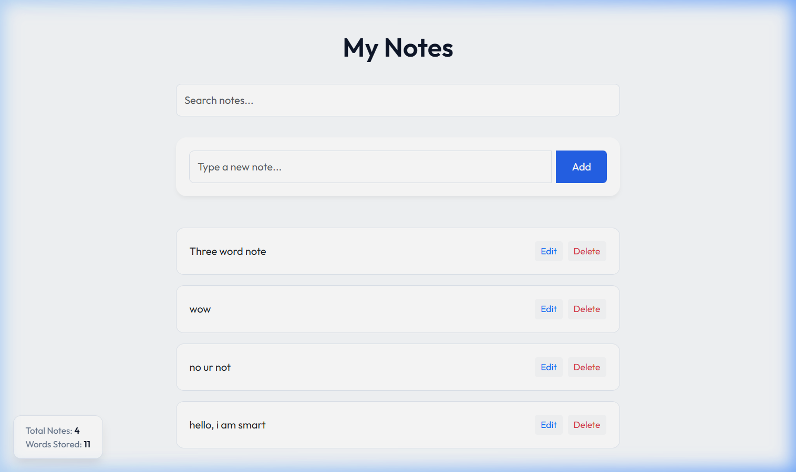
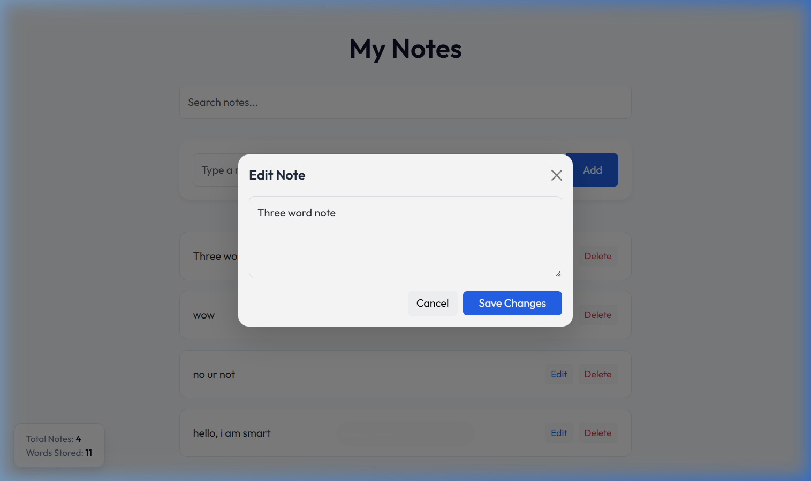

Semester Project Report - Web Programming
April 14, 2026
The core objective of this project is to develop a lightweight, user-friendly, and highly interactive Note-Taking web application. It serves as a comprehensive demonstration of Full-Stack development concepts, focusing on the seamless integration of a Python-based backend (Django) with a dynamic JavaScript frontend (jQuery & AJAX).
The application follows the Model-View-Template (MVT) design pattern:
Note structure in the database.When a user types a note and clicks Add, jQuery captures the input and sends it to the Django server via a background POST request. The server saves the note to the SQLite database and returns a success response. The frontend then updates the "Notes List" and "Stats Overlay" instantly without refreshing the entire page.
The application allows for complete Create, Read, Update, and Delete actions. All interactions are asynchronous, providing a modern Single-Page Application (SPA) feel.

Server-side and client-side validation ensure that no empty notes are stored. If a user attempts to save an empty field, a red error notification appears dynamically.
A floating statistics panel in the bottom-left corner tracks the Total Notes and Total Word Count in real-time.

@csrf_exempt
def add_note(request):
if request.method == 'POST':
data = json.loads(request.body)
content = data.get('content', '')
if content:
note = Note.objects.create(content=content)
return JsonResponse({'id': note.id, 'content': note.content})
return JsonResponse({'error': 'Invalid request'}, status=400)
$('#addBtn').click(function() {
var content = $('#noteInput').val().trim();
if (content) {
$.ajax({
url: '/api/add/',
type: 'POST',
contentType: 'application/json',
data: JSON.stringify({ content: content }),
success: function(response) {
$('#noteInput').val('');
loadNotes();
}
});
}
});
By integrating a RESTful API with a dynamic frontend, this project demonstrates a modern approach to web application architecture. The use of Django ensures security and scalability, while jQuery and Bootstrap provide a responsive and alive user experience.
Project Submitted for Web Programming Lab Evaluation.